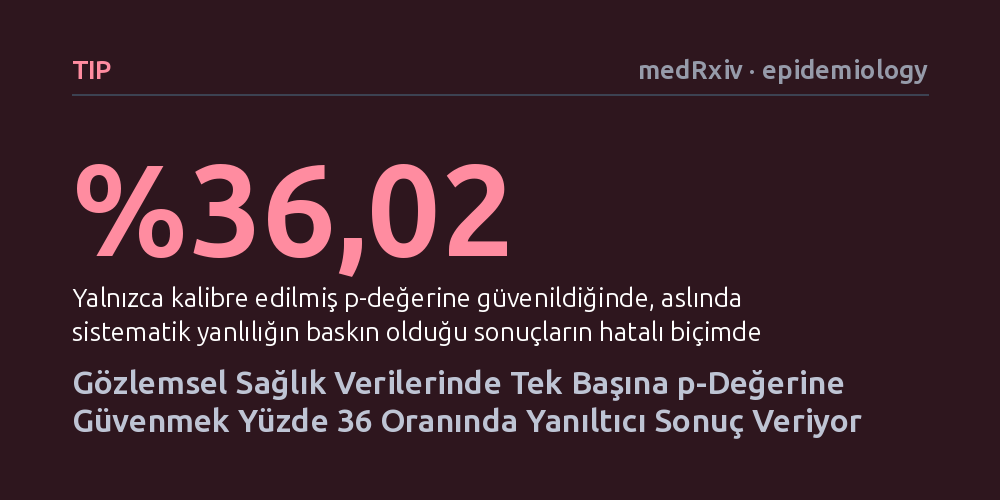

TIP · medRxiv · epidemiology · 2026-10-12
Araştırmacılar, gözlemsel sağlık çalışmalarındaki sistematik yanlılık miktarını hesaplayan yeni bir istatistiksel ölçüm geliştirerek bunun karar doğruluğunu nasıl etkilediğini inceledi. Yaklaşık iki milyon simülasyonda, yalnızca p-değerine güvenmenin yüzde 36 oranında hatalı kabule yol açtığı ve yeni yöntemin bu yanılgıyı saptadığı gösterildi.
Tıpta 'istatistiksel olarak anlamlı' kabul edilen pek çok bulgunun gerçek bir tedavi etkisinden değil, araştırmadaki gizli yöntemsel yanlılıklardan kaynaklanabileceğini gösterir.

Tıp dünyasında, özellikle kalp ve damar hastalıkları gibi alanlarda klinik kararların büyük bir bölümü gözlemsel araştırmalara dayanır. Ancak bu araştırmalarda hastalar rastgele gruplara dağıtılmadığı için, tedaviyi alanlar ile almayanlar arasındaki sosyoekonomik veya biyolojik farklar sonuçları saptırabilir. Mevcut epidemiyoloji uygulamalarında bir bulgunun geçerliliği çoğunlukla 'kalibre edilmiş p-değeri 0,05 eşiğini geçti mi geçmedi mi' sorusu üzerinden değerlendirilir. Oysa bu ikili yaklaşım, veride bir sinyalin var olup olmadığı ile o sinyalin gerçekten güvenilir olup olmadığını birbirine karıştırır.
Örneğin yeni bir ilacın ölüm oranını azalttığı görüldüğünde, bu sonucun gerçekten ilaçtan mı yoksa durumu zaten daha iyi olan hastaların bu ilaca erişebilmiş olmasından mı kaynaklandığını bilmek hayati önem taşır. Araştırmacılar gözlemlenen etkinin ne kadarının sistematik hatadan ileri geldiğini sayısal olarak ortaya koyamadığında, hekimler ve kılavuz hazırlayıcılar aslında yanlılığın eseri olan sahte faydalara güvenerek yanıltıcı tedavi kararları verebilir.
Araştırmacılar bu sorunu aşmak için 'Yanlılık Atıf Oranı' (Bias Attribution Fraction - BAF) adını verdikleri, 0 ile 1 arasında sürekli değer alan yeni bir istatistiksel ölçüt tanımladılar. Bu ölçüt, gözlemlenen etkinin tam olarak ne kadarlık payının sistematik hatadan kaynaklandığını yüzde olarak ifade etmeyi ve buna bir güven aralığı oluşturmayı amaçlıyor. Sistematik hatanın boyutunu yakalamak içinse tedaviyle biyolojik hiçbir bağı olmadığı bilinen 'negatif kontrol' sonuçlarından yararlanılıyor.
Yöntemin başarısını sınamak amacıyla üç aşamalı bir çalışma yürütüldü. İlk aşamada ölçütün matematiksel temeli kuruldu; ikinci aşamada gerçek durumun kesin olarak bilindiği 1.920 farklı senaryo altında toplam 1.920.000 Monte Carlo simülasyonu çalıştırıldı. Son olarak yöntem, gerçek klinik veride test edilmek üzere MIMIC-IV yoğun bakım veri tabanındaki yetişkin kalp hastalarının kayıtlarına uygulandı. Burada beta bloker kullanımının bir yıllık ölüm oranlarına etkisi, hedeflenmiş maksimum olabilirlik kestirimi ve 12 negatif kontrol sonucuyla incelendi.
Neredeyse iki milyon simülasyonun sonuçları çarpıcı bir gerçeği gösterdi: Yalnızca kalibre edilmiş p-değerine güvenildiğinde, aslında tamamen sistematik yanlılığın baskın olduğu sonuçların yüzde 36,02'si 'güvenilir ve kullanılabilir' olarak etiketlendi. Diğer bir deyişle, mevcut en gelişmiş kalibrasyon araçları kullanılsa bile, her üç hatalı durumdan birinde yanılgı fark edilemedi ve taraflı bir sonuca sağlam muamelesi yapıldı.
Yeni geliştirilen Yanlılık Atıf Oranı ve bunun belirsizlik aralığı analize eklendiğinde ise, hangi bulguların gerçekten güvenilir hangilerinin ise yanlılık ürünü olduğu çok daha net biçimde ayırt edilebildi. Sürekli bir oran sunulması, araştırmacıların 'anlamlı' ya da 'anlamsız' kutuplaşmasına sıkışmadan, gözlemlenen etkinin ne kadarının veri kusurlarından kaynaklandığını şeffafça görebilmesini sağladı.
Elde edilen sonuçlar, tıp ve epidemiyoloji literatüründeki raporlama alışkanlıklarının değişmesi gerektiğine işaret ediyor. Araştırmaların sadece 'istatistiksel olarak anlamlı bir fark saptandı' diyerek noktalanması yerine, bu farkın ne kadarının sistematik hataya atfedilebileceğini açıkça beyan etmesi gerekiyor. Böyle bir şeffaflık, klinisyenlerin ve sağlık otoritelerinin yanıltıcı tedavi etkilerine kanmasını engelleyebilir.
Yine de bu yeni yöntemin klinik kılavuzlara girebilmesi için bağımsız araştırmacılar tarafından farklı veri tabanlarında doğrulanması ve negatif kontrol seçimlerinin nesnel standartlara bağlanması gerekiyor. Hakem denetiminden geçtikten sonra bu yaklaşım, özellikle büyük gözlemsel sağlık verilerinin analizinde yeni bir denetim ölçütü haline gelebilir.